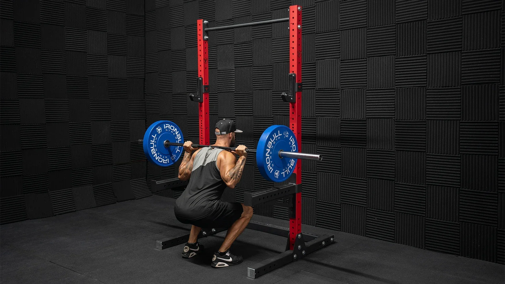
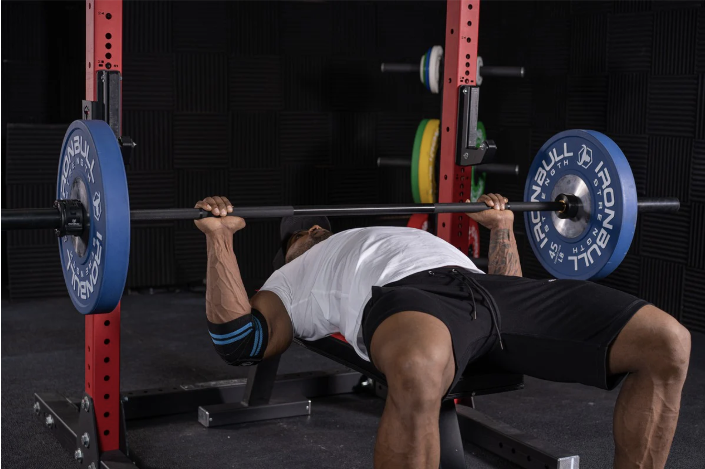
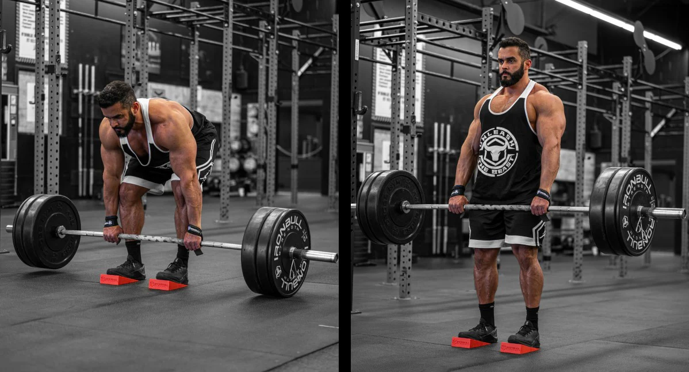

My Favorite Workouts

🦵Squat
A squat is a strength training exercise where you lower your body by bending at the knees and hips, while holding a barbell on your back. It builds the quads, glutes, hamstrings, and core.

💪Bench Press
A bench press is a strength training exercise where you lie on a bench and press a barbell upward from your chest. It builds the chest, triceps, and front delts.

🏋️Deadlift
A deadlift is a strength training exercise where a barbell is lifted from the ground, held at the hips, and then lowered back down. It builds the